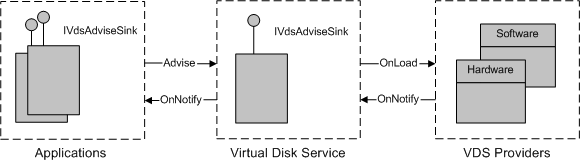

[Beginning with Windows 8 and Windows Server 2012, the Virtual Disk Service COM interface is superseded by the Windows Storage Management API.]
A provider can send an event notification to VDS, and VDS can in turn forward the notification to applications. The notification model that is used by VDS resembles the connection-point model that is used by COM objects.
VDS generates service notifications for events such as a drive letter assignment or the arrival of an unallocated disk. Once VDS allocates a disk to a provider, the provider is responsible for generating the associated notifications. The illustration that follows shows the interfaces and methods used in the VDS notification model.

To receive notifications, VDS registers its IVdsAdviseSink interface with the provider object by calling the IVdsProviderPrivate::OnLoad method and passing a pointer to the interface. When a notification event occurs, such as the arrival of a new volume or drive, the provider passes the appropriate notification structure to VDS as an IVdsAdviseSink::OnNotify method parameter.
The process is similar between an application and VDS. Specifically, to receive notifications, an application registers its IVdsAdviseSink interface with VDS by calling the IVdsService::Advise method and passing a pointer to the interface. When VDS receives a notification from a provider, it passes the appropriate notification structure to registered applications as an IVdsAdviseSink::OnNotify method parameter.
[!Note]
An application that calls Advise must eventually call the IVdsService::Unadvise method. Ideally, it should call Unadvise as soon as it no longer needs to receive notifications.
Â
The table that follows lists the provider-generated notifications by object type.
| Object | Notification | Value | Link to event description |
|---|---|---|---|
| Pack | VDS_NF_PACK_ARRIVE | 1 | VDS_PACK_NOTIFICATION |
| Pack | VDS_NF_PACK_DEPART | 2 | VDS_PACK_NOTIFICATION |
| Pack | VDS_NF_PACK_MODIFY | 3 | VDS_PACK_NOTIFICATION |
| Volume | VDS_NF_VOLUME_ARRIVE | 4 | VDS_VOLUME_NOTIFICATION |
| Volume | VDS_NF_VOLUME_DEPART | 5 | VDS_VOLUME_NOTIFICATION |
| Volume | VDS_NF_VOLUME_MODIFY | 6 | VDS_VOLUME_NOTIFICATION |
| Volume | VDS_NF_VOLUME_REBUILDING_PROGRESS | 7 | VDS_VOLUME_NOTIFICATION |
| Disk | VDS_NF_DISK_ARRIVE | 8 | VDS_DISK_NOTIFICATION |
| Disk | VDS_NF_DISK_DEPART | 9 | VDS_DISK_NOTIFICATION |
| Disk | VDS_NF_DISK_MODIFY | 10 | VDS_DISK_NOTIFICATION |
| Partition | VDS_NF_PARTITION_ARRIVE | 11 | VDS_PARTITION_NOTIFICATION |
| Partition | VDS_NF_PARTITION_DEPART | 12 | VDS_PARTITION_NOTIFICATION |
| Partition | VDS_NF_PARTITION_MODIFY | 13 | VDS_PARTITION_NOTIFICATION |
| Subsystem | VDS_NF_SUB_SYSTEM_ARRIVE | 101 | VDS_SUB_SYSTEM_NOTIFICATION |
| Subsystem | VDS_NF_SUB_SYSTEM_DEPART | 102 | VDS_SUB_SYSTEM_NOTIFICATION |
| Subsystem | VDS_NF_SUB_SYSTEM_MODIFY | 151 | VDS_SUB_SYSTEM_NOTIFICATION |
| Controller | VDS_NF_CONTROLLER_ARRIVE | 103 | VDS_CONTROLLER_NOTIFICATION |
| Controller | VDS_NF_CONTROLLER_DEPART | 104 | VDS_CONTROLLER_NOTIFICATION |
| Controller | VDS_NF_CONTROLLER_MODIFY | 350 | VDS_CONTROLLER_NOTIFICATION |
| Controller | VDS_NF_CONTROLLER_REMOVED | 351 | VDS_CONTROLLER_NOTIFICATION |
| Port | VDS_NF_PORT_MODIFY | 352 | VDS_PORT_NOTIFICATION |
| Port | VDS_NF_PORT_REMOVED | 353 | VDS_PORT_NOTIFICATION |
| Drive | VDS_NF_DRIVE_ARRIVE | 105 | VDS_DRIVE_NOTIFICATION |
| Drive | VDS_NF_DRIVE_DEPART | 106 | VDS_DRIVE_NOTIFICATION |
| Drive | VDS_NF_DRIVE_MODIFY | 107 | VDS_DRIVE_NOTIFICATION |
| Drive | VDS_NF_DRIVE_REMOVED | 354 | VDS_DRIVE_NOTIFICATION |
| LUN | VDS_NF_LUN_ARRIVE | 108 | VDS_LUN_NOTIFICATION |
| LUN | VDS_NF_LUN_DEPART | 109 | VDS_LUN_NOTIFICATION |
| LUN | VDS_NF_LUN_MODIFY | 110 | VDS_LUN_NOTIFICATION |
Â
VDS generates the remaining notifications. The following table lists service-based notification constants by category.
| Category | Notification | Value | Link to event description |
|---|---|---|---|
| Disk | VDS_NF_DISK_ARRIVE | 8 | VDS_DISK_NOTIFICATION |
| Disk | VDS_NF_DISK_DEPART | 9 | VDS_DISK_NOTIFICATION |
| Disk | VDS_NF_DISK_MODIFY | 10 | VDS_DISK_NOTIFICATION |
| Drive letter | VDS_NF_DRIVE_LETTER_FREE | 201 | VDS_DRIVE_LETTER_NOTIFICATION |
| Drive letter | VDS_NF_DRIVE_LETTER_ASSIGN | 202 | VDS_DRIVE_LETTER_NOTIFICATION |
| File system | VDS_NF_FILE_SYSTEM_MODIFY | 203 | VDS_FILE_SYSTEM_NOTIFICATION |
| File system | VDS_NF_FILE_SYSTEM_FORMAT_PROGRESS | 204 | VDS_FILE_SYSTEM_NOTIFICATION |
| Volume | VDS_NF_MOUNT_POINTS_CHANGE | 205 | VDS_MOUNT_POINT_NOTIFICATION |
Â
Â
Â